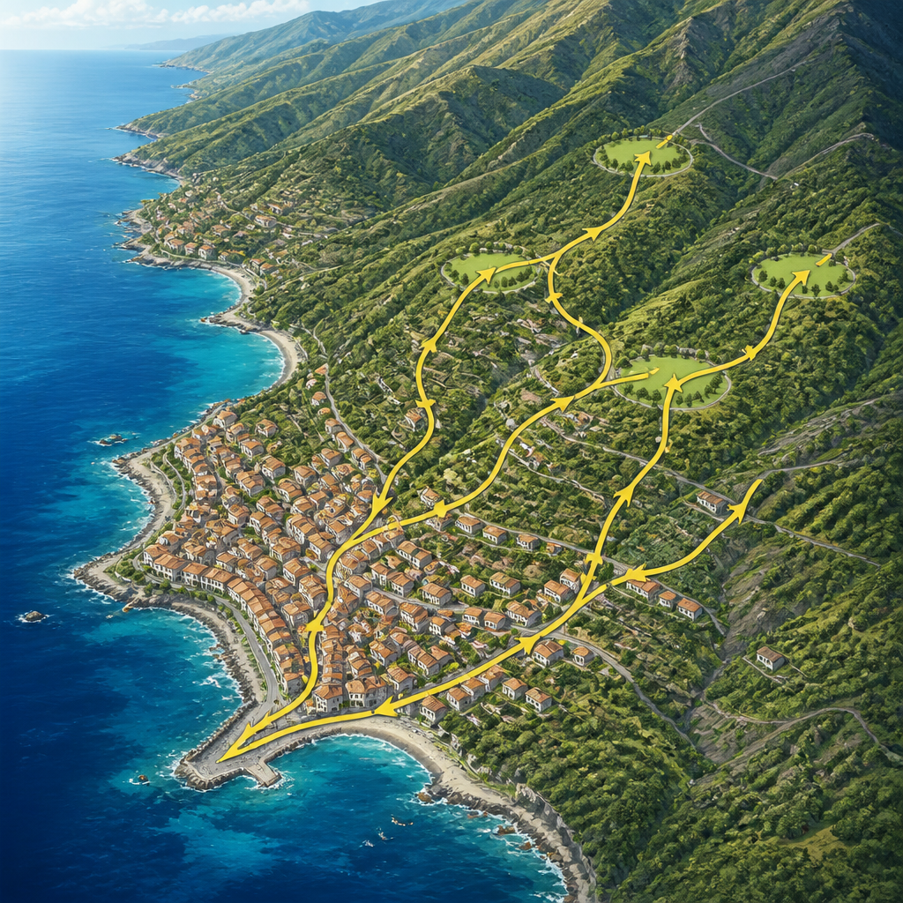
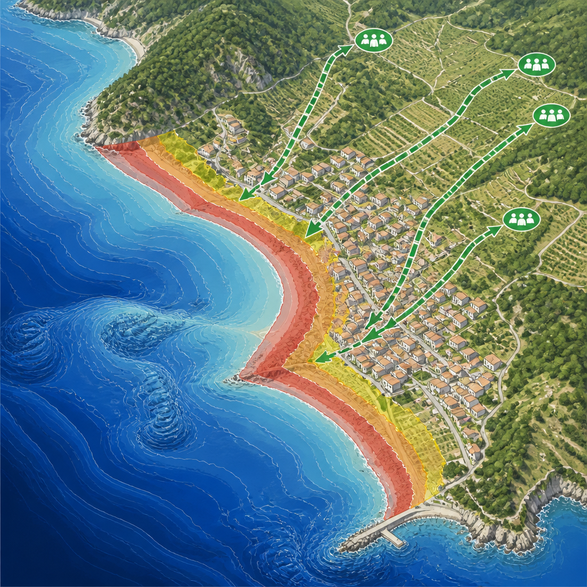

Il Comune calabrese entra nel programma dedicato alla preparazione delle comunità costiere al rischio di maremoto.
Palmi, in provincia di Reggio Calabria, ha ricevuto il riconoscimento di Tsunami Ready dalla Commissione Oceanografica Intergovernativa dell’UNESCO. È il secondo Comune italiano a ottenerlo, dopo Minturno. La consegna si è svolta nel pomeriggio di sabato 12 settembre 2026, alla presenza delle rappresentanze del Comune, del Centro Allerta Tsunami dell’Istituto Nazionale di Geofisica e Vulcanologia, del Dipartimento della Protezione Civile e dell’Istituto Superiore per la Protezione e la Ricerca Ambientale.
Il riconoscimento è stato consegnato da Denis Chang Seng, segretario dell’IOC-UNESCO per l’area NEAMTWS. Si tratta del Sistema di Allerta e Mitigazione degli Tsunami nell’Atlantico nord-orientale, nel Mediterraneo e nei mari connessi. Alla cerimonia erano presenti anche il sindaco di Palmi Giovanni Calabria, il vicesindaco Salvatore Celi, il presidente della Consulta Giovanile Palmese Daniele Trimboli e il comandante della Polizia Locale Francesco Managò.
Tsunami Ready è un programma volontario rivolto alle comunità locali. Il suo scopo è promuovere la preparazione al rischio tsunami, cioè al rischio di maremoto: un insieme di onde marine che può raggiungere la costa. Il programma mette in relazione organizzazioni responsabili della gestione delle emergenze, amministrazioni locali e cittadini, con l’obiettivo di migliorare la sicurezza pubblica prima, durante e dopo un’emergenza.
Il percorso punta a rendere le comunità costiere più capaci di riconoscere il rischio, ricevere in modo tempestivo le allerte e adottare comportamenti adeguati. L’accreditamento si basa su dodici indicatori, dedicati a diversi aspetti della preparazione: la conoscenza delle aree potenzialmente esposte, le modalità di allertamento, le procedure di risposta e le attività di informazione e sensibilizzazione rivolte alla popolazione.
Il programma Tsunami Ready considera la conoscenza delle zone esposte, l’allertamento, le procedure di risposta e l’informazione alla popolazione. L’obiettivo è rafforzare la capacità della comunità di riconoscere il pericolo e rispondere a una possibile emergenza.
Il percorso di Palmi è particolarmente rilevante per le caratteristiche del territorio. Il Comune si trova lungo la costa tirrenica calabrese, in un’area a medio-alto rischio maremoto. Nel corso della sua storia, Palmi è stata interessata da tsunami documentati dall’Italian Tsunami Effects Database dell’INGV. In questo contesto, conoscenza del rischio e preparazione della popolazione sono elementi centrali per rafforzare la capacità di risposta della comunità.
Prima dell’accreditamento, nel contesto del NEAMTWS è stata realizzata a Palmi una rilevazione sulla percezione del rischio tsunami nella popolazione. L’attività è servita a disporre di una misura iniziale della conoscenza, della consapevolezza e della percezione del rischio sul territorio. Mantenere negli anni lo stesso strumento di rilevazione permetterà di confrontare i risultati nel tempo, osservando eventuali cambiamenti nella conoscenza e nella percezione della popolazione.

Nel 2026 Palmi è stata individuata come località obiettivo del progetto CoastWAVE 2, finanziato dalla Commissione europea attraverso la DG ECHO nelle annualità 2025-2026. Il progetto è finalizzato a rafforzare la resilienza, cioè la capacità di affrontare e rispondere a un rischio, delle comunità costiere del Mediterraneo e dell’Atlantico nord-orientale rispetto agli tsunami e agli altri rischi legati al livello del mare.
Lo studio di dettaglio della batimetria, ovvero della conformazione dei fondali, della costa e degli elementi naturali che possono influenzare la propagazione locale di uno tsunami ha permesso di individuare le aree maggiormente esposte. Su questa base sono stati sviluppati specifici percorsi di evacuazione dalla costa verso le aree di raccolta. Il risultato del lavoro è consultabile sul sito del Centro Allerta Tsunami.
I dati sulla percezione del rischio saranno utili anche per valutare l’efficacia degli interventi di informazione, comunicazione e preparazione realizzati nel territorio nell’ambito del programma. Accanto agli indicatori operativi, sarà quindi possibile seguire nel tempo l’evoluzione della consapevolezza della comunità.
Il riconoscimento non viene descritto come un punto di arrivo, ma come una tappa di un processo che richiede continuità nelle attività di preparazione, informazione e verifica. Ogni indicatore raggiunto e la possibilità di misurare nel tempo la percezione del rischio contribuiscono a rendere la comunità più consapevole di un possibile pericolo e della risposta da adottare.
Durante lo scorso inverno il ciclone Ulrike ha fortemente danneggiato il lungomare di Palmi, che porta ancora i segni dell’impatto dell’evento. Tsunami e cicloni sono fenomeni diversi per origine e caratteristiche, ma esperienze di questo tipo possono rendere più concreta la consapevolezza dei pericoli provenienti dal mare. Per la parte di propria competenza, Tsunami Ready può così contribuire a rafforzare una più ampia sensibilità verso i rischi costieri.
Questo articolo l'hai letto sul blog di Meteo Radar: un'app che ti mostra da dove vengono i numeri, invece di limitarsi a dartelo. E ogni mattina ne trovi uno nuovo come questo.